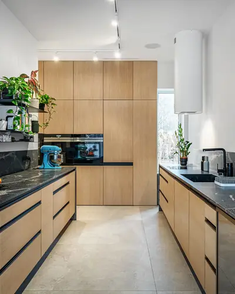
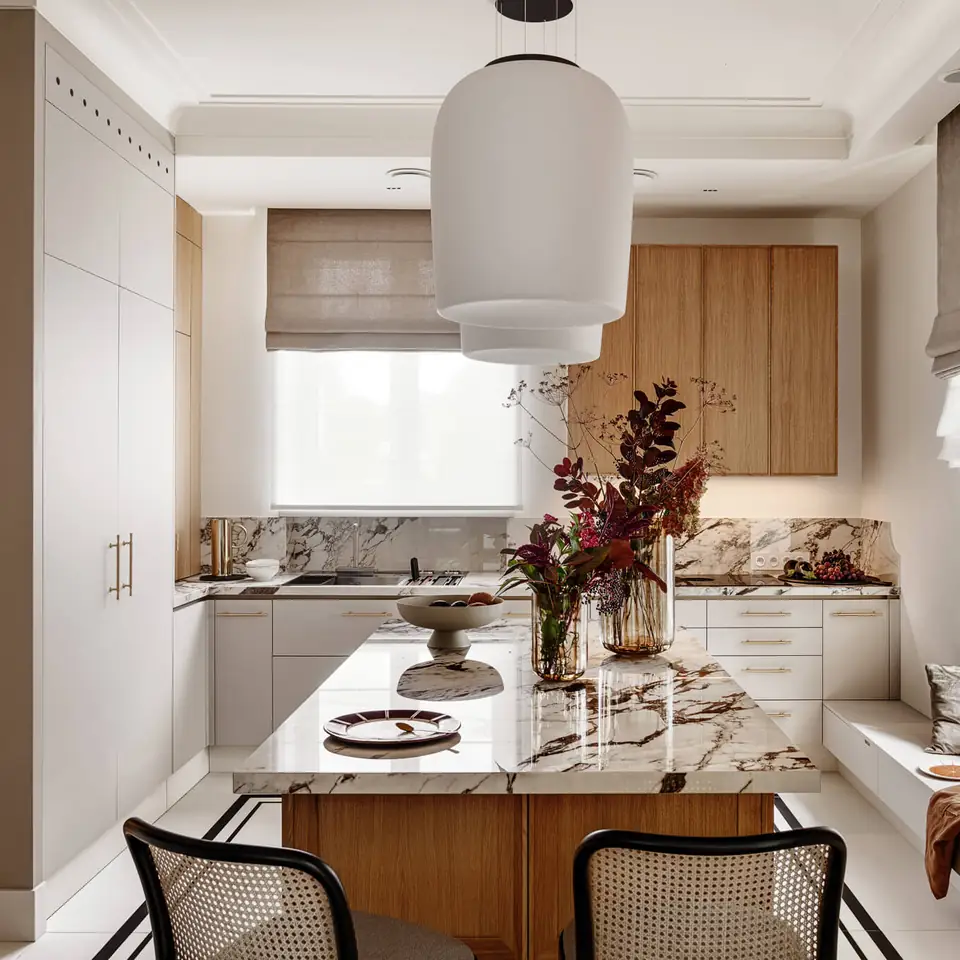
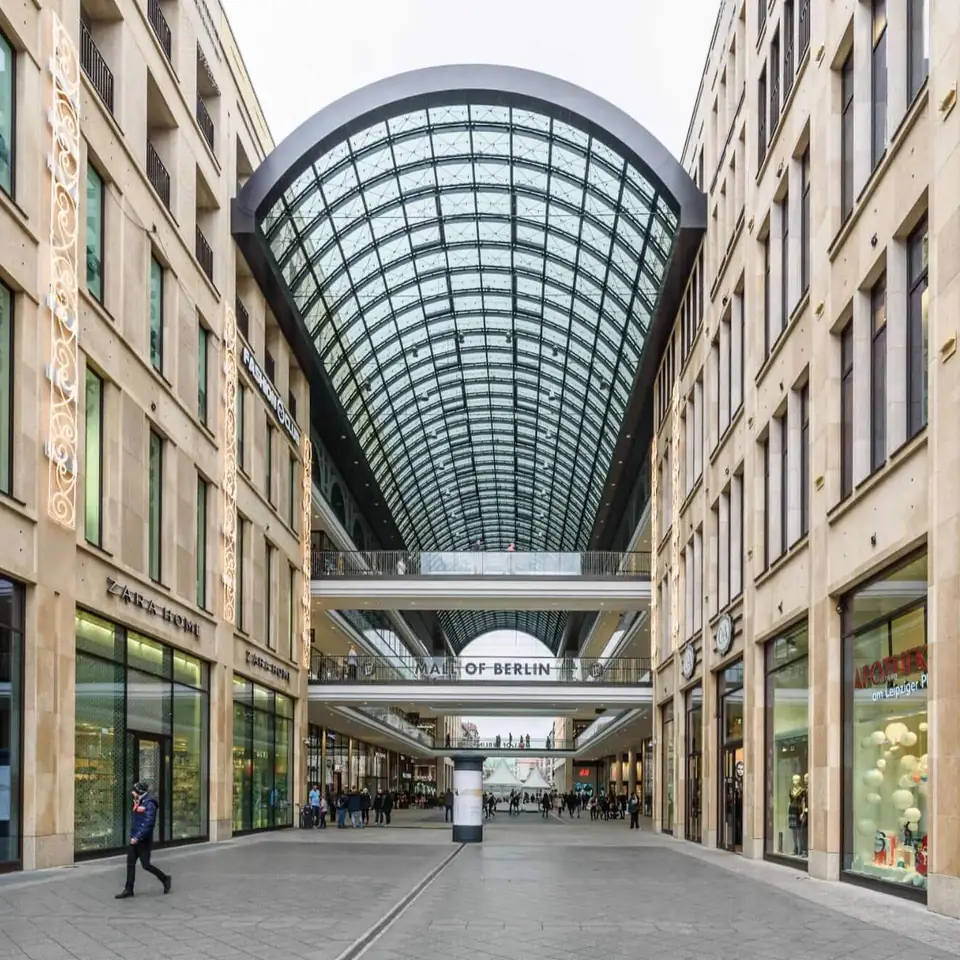
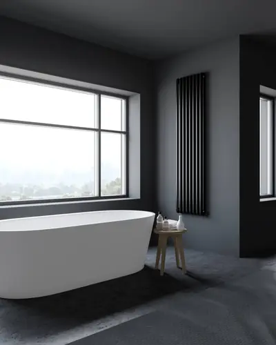
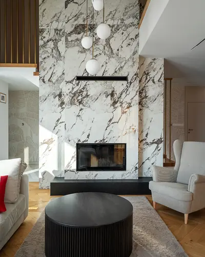
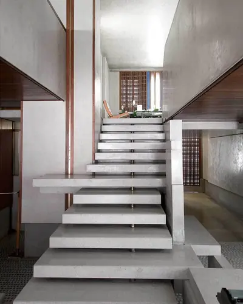
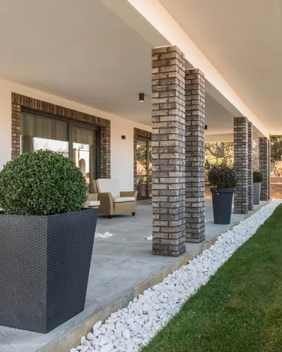
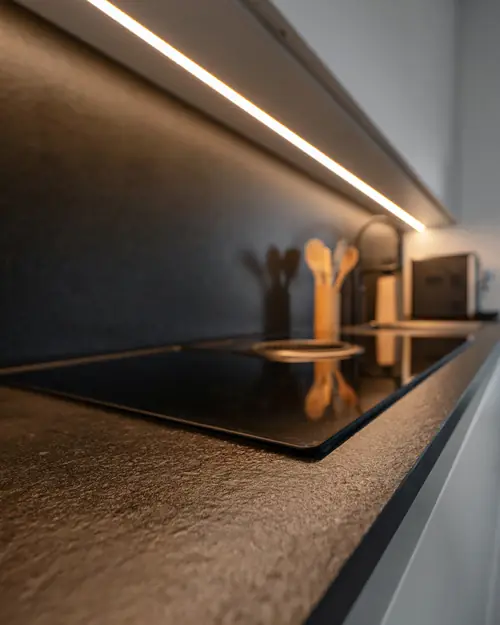
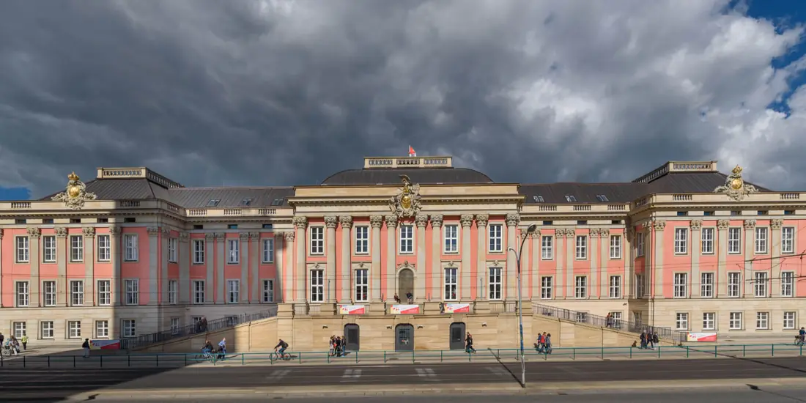
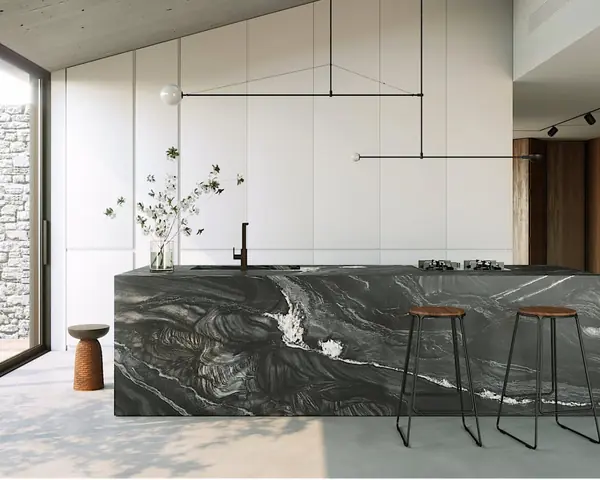

Kuchnia
Blaty, wyspy, podłogi i ściana robocza z kamienia, spieku albo konglomeratu.


Od 1990 roku obrabiamy kamień. W hurtowni zobaczysz na żywo granity, kwarcyty, marmury i spieki kwarcowe, a nasi kamieniarze wykonają z nich blat, łazienkę, schody, taras albo elewację.
Hurtownia i zakład kamieniarskiul. Ściegiennego 252, Kielce
Kuchnia ze spieków Marazzi Capraia i Neolith Calacatta Silk
Mall of Berlin, Leipziger Platz: kamienna fasada Kontin
Doradzimy, który materiał najlepiej sprawdzi się w Twoim projekcie, i wykonamy go starannie, z dbałością o detale. Ważne jest każde ziarnko piasku.

Blaty, wyspy, podłogi i ściana robocza z kamienia, spieku albo konglomeratu.

Blaty łazienkowe, posadzki i okładziny ścian, także z marmuru i onyksu.

Kominki, okładziny ścienne i posadzki, które stają się ozdobą wnętrza.

Wewnętrzne i zewnętrzne: marmur, granit, trawertyn i konglomerat.

Kamień odporny na warunki atmosferyczne, dobrany do miejsca i sposobu użytkowania.
Pomagamy na każdym etapie: doradzimy, jaki kamień dobrać już przy planowaniu, a potem wykonamy wspólnie stworzony projekt.
Zamów wycenę
Granit Nero Assoluto Zimbabwe
Kamienie z pięciu kontynentów, od USA, przez Brazylię, Hiszpanię, Austrię i Angolę, po Chiny. Nie każdy sprawdza się wszędzie tak samo: liczy się twardość, odporność na warunki atmosferyczne i plastyczność. Pomożemy wybrać ten najlepszy.
Kontin jest oficjalnym dystrybutorem Marazzi. Przyjedź do hurtowni w Kielcach: obejrzyj, porównaj, dotknij i wybierz kamień, który najlepiej sprawdzi się w Twoim projekcie.
Godziny i dojazdZaczynaliśmy w 1990 roku od niewielkiego zakładu w Kielcach: obróbka kamienia, kamieniarstwo budowlane i artystyczne. Rok później ruszyliśmy z pracami w Niemczech, potem w Luksemburgu i Szwajcarii, dziś także w Szwecji i Austrii.
Wykonujemy kamienne elewacje, również z elementami rzeźbionymi, renowacje zabytków i detale architektoniczne. Elementy przygotowujemy we własnych halach produkcyjnych z nowoczesnym parkiem maszynowym.

Landtag Brandenburgii, fasada zachodnia, Poczdam
Pod każdym zdjęciem materiał blatu albo okładziny. Przesuń palcem lub myszą, kliknij, żeby powiększyć.

Zapraszamy architektów, projektantów, studia meblowe, konserwatorów zabytków i każdego, kto chce pracować z kamieniem naturalnym.
Kamienne elewacje, schody i posadzki w biurowcach, osiedlach i obiektach mixed-use. Podpowiemy, który kamień pasuje do koncepcji, i pomożemy ją zrealizować.
Przyjedź, obejrzyj i wybierz konkretną płytę do projektowanego wnętrza. Zaprojektowane przez Ciebie elementy wykonamy u nas.
Blaty, wykończenia i całe fronty z kamienia do kuchni, łazienek i salonów. Doradzimy przy doborze i na etapie realizacji zamówienia.
Napisz, co chcesz wykonać i z jakiego materiału. Podaj wymiary, jeśli je znasz, a odpiszemy z wyceną.
ul. Ściegiennego 252
25-116 Kielce
pon. i śr. 8:00-18:00
wt., czw., pt. 8:00-16:00
sob. 9:00-14:00
Marta Adamczyk 500 861 579
Izabela Kubus 515 765 633
sprzedaz@kontin.com.pl